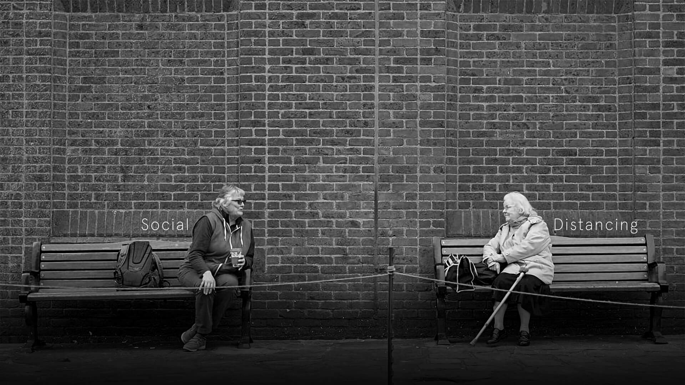
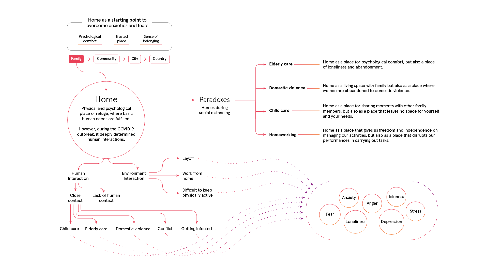
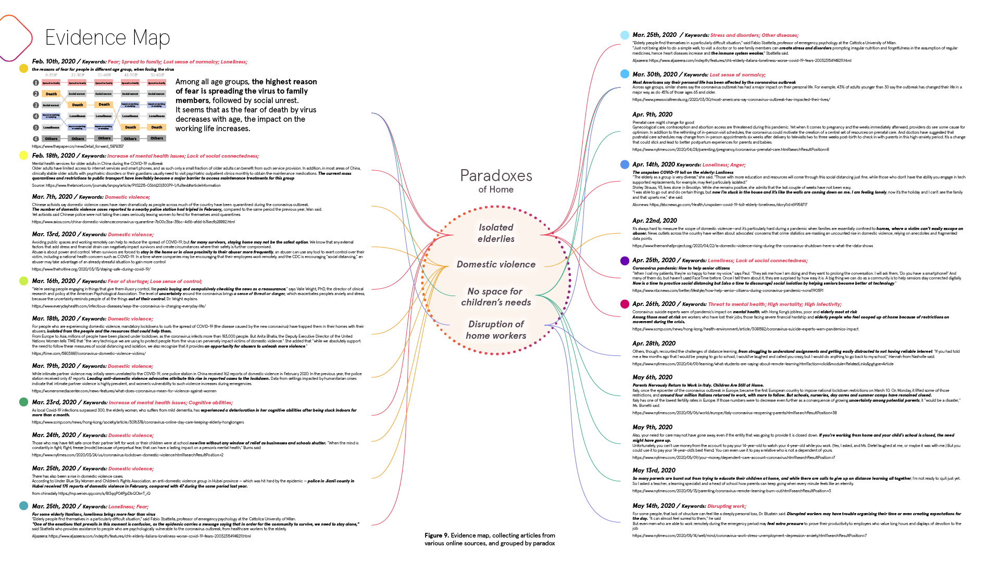
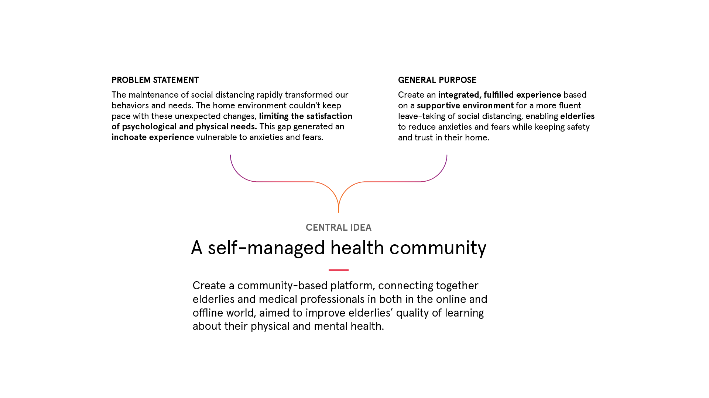
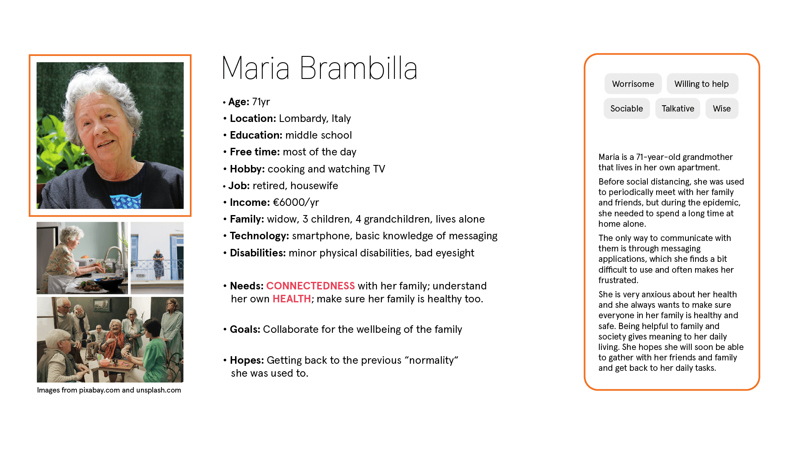
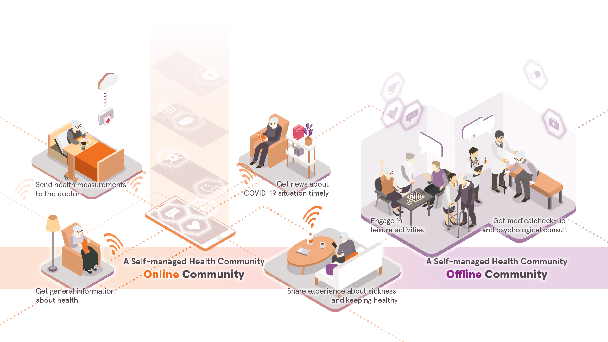
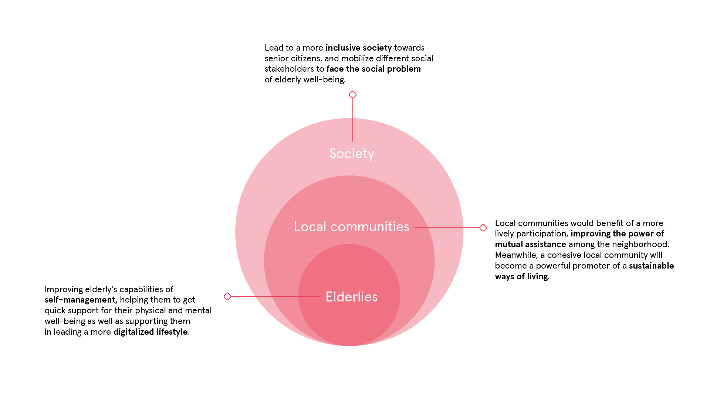
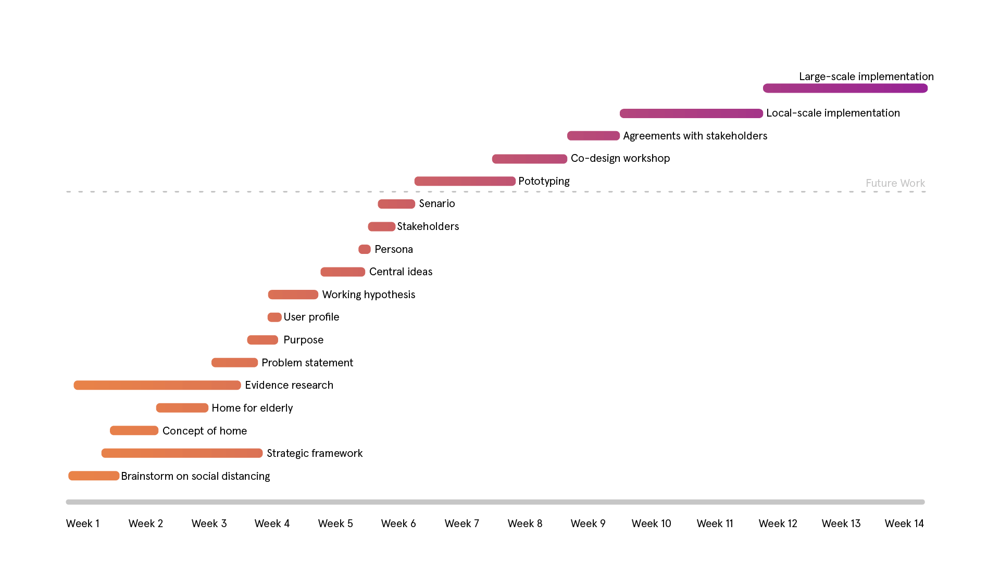

Photo by Oli Scarff/AFP/ Getty via insider.com
TEAM MEMBERS
Nicolò Azzolin
Wan Jiamin
Zhou Yi
Yang Ruixin
ROLE
Concept mapping, Concept Generation, Service design.
The majority of the maps have been developed in remote teamwork.
COURSE
Interactions and Environments, Spring 2020
Prof. Kaja Tooming Buchanan
Tongji University, Shanghai
Elderlies' Home during the pandemic
Analysis and concept proposal for the leave-taking of Social Disancing
QUICK NAVIGATION
The year 2020 has begun in the worst way imaginable. A new highly-contagious coronavirus (COVID-19) was discovered. It rapidly spread in almost all countries over the world, causing in many of the infected a severe pneumonia infection that often led to fatal events in the elder and more fragile population. The particular ability of the virus to reproduce itself among humans brought many governments to adopt new policies and rules to contain the spread of the infection, trying to prevent as much deaths as possible and to contain the damages to economy. In most countries, social distancing have been adopted. According to the CDC¹, a physical distance of at least 2 meters (about 6 feet) is required to prevent contagion. Also, everyone is required to wear a protective mask while outside their own household. The new policies also caused a psychological distance among people, and the combination of mental and physical distance led to the transformation of many of the human environments and the way we interact and approach with other people.
Design Challenge
Given by professor Kaja Tooming Buchanan
How to make the transitional process of leave-taking from the maintenance of social distancing less stressful and safe, so that the initiation of re-opening the society (businesses, schools, etc.) reduces the fear and anxiety of people.

Our Definition of Social Distancing
Social distancing is the experience of new social and environmental behaviors aimed at containing the spread of the virus. It causes a change in human environments, on oneself, and on the relationship with the others.
From definition to concept mapping
based on the concept of me, society and environment.
Diving deeper into the concept of Home during Social Distancing

{kind=link}


{kind=link}

Stating the problem and finding the general purpose
Integrating theories from Erving Goffman and the concept of home.
Problem Statement
The maintenance of social distancing rapidly transformed our behaviors and needs. The home environment couldn't keep pace with these unexpected changes, limiting the satisfaction of psychological and physical needs. This gap generated an inchoate experience vulnerable to anxieties and fears.
General Purpose
Create an integrated, fulfilled experience based on a supportive environment for a more fluent leave-taking of social distancing, enabling elderlies to reduce anxieties and fears while keeping safety and trust in their home.


Concept generation
To understand the elderly’s desire for connectedness, we used Richard Buchanan’s Four Orders of Design Theory. We divided the needs of staying connected into four different dimensions and formulated four questions. These have been our starting point, helping us thinking about the central idea.




Service channels expansion over time
The service will though both online and offline channels. Due to COVID-19, it will be hard to implement the offline community under social distancing. The service channel will first start with the online community, from group chats to social media. With the step of reopening to “new normal”, the offline community will initiate conversation groups and develop community centers.

Storytelling scenario and blueprint
Defining the main Persona based on user profiles and the scenario representation based on the central idea. The blueprint is based on the scenario representation and follows the expansion of channels over time.




What's next?
Timeline based on team planning over 14 weeks. It shows accomplished work and future testing and implementation phase.

List of Literature
- Buchanan, Richard, “Surroundings and Environments in Fourth Order Design.” Design Issues. Volume 35, Number 1, Winter 2019.
- Dewey, John, “Having an Experience.” In Art as An Experience. New York: Capricorn Books, 1958.
- Goffman, Erving, “Facial Engagements.“ In Behavior in Public Places. New York: The Free Press, 1966.
- McKeon, Richard, “Creativity and the Commonplace”. In Selected Writing of Richard McKeon. Volume 2. Ed. by Zahava K. McKeon and William G. Swenson. Chicago: The University of Chicago Press, 2005.
- Spinoza, Ethics: Preceded by On the Improvement of the Understanding. Ed. James Gutmann. New York: Hafner Press.
- Hall, Edward T., The Hidden Dimension. New York: Anchor Books, 1969.
- Courage, Catherine and Baxter, Kathy, Understanding Your Users: A Practical Guide to User Requirements Methods, Tools, and Techniques. Elsevier: Morgan Kaufmann Publishers, 2005.
- Whitback, Caroline, “Introduction to Ethical Concepts.” In Ethics in Engineering Practice and Research. Cambridge University Press, 1998.
- Kotler, Philip, “Humanistic Marketing: Beyond the Marketing Concept, in ”Philosophical and Radical Thought in Marketing”, Lexington Books, 1987.
- Williams, Raymond, “Dominant, Residual, and Emergent.” in Marxism and Literature, Oxford University Press, 1977.
- Freud, Sigmund, “The Unconscious” and “Anxiety.” in Solomon (Ed.), “What Is an Emotion? Classic and Contemporary Readings. New York: Oxford University Press, 2003.